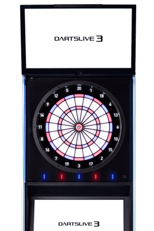
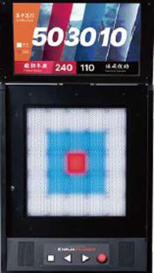
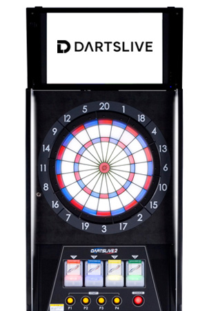
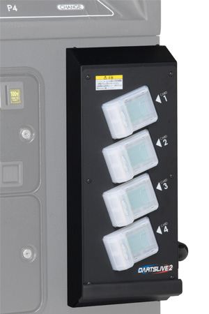
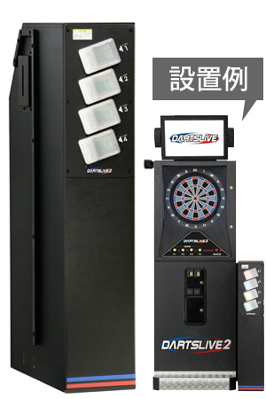

日本語

DARTSLIVE3 | DX, SE, LITE22 記事
NINJA TRAINER ARCADE1 記事
DARTSLIVE2 | EX, DX13 記事
DARTSLIVE2 | EX-F, DL2-CVT14 記事
DARTSLIVE | DL1-CVT7 記事 弊社にお問い合わせいただく前に1 記事Most Popular Articles（よく読まれている記事）
- dl2_000_サポートマニュアル※DARTSLIVE2向け
- dl3_018_【各種説明書】ダウンロードはこちら
- dl3_016_ターゲットセンサーが反応しない / 正しい位置を検知しない
- dl2_006_オンラインにならない
- dl3_002_エラーメッセージが表示される
- dl3_004_電源スイッチをON にしても動作しない
- dl3_015_スピードセンサーが反応しない / または誤反応する
- dl1cvt001_起動しない／画面がつかない
- dl3_003_エラーメッセージ一覧
- dl2_010_クレジット設定を変えたい
ENGLISH,OTHER
DARTSLIVE2 | EX, DX12 articles
DARTSLIVE3 | DX, SE, LITE6 articles
NINJA TRAINER ARCADE1 article
DARTSLIVE2 | EX-F,DL2-CVT13 articles
DARTSLIVE | DL1-CVT8 articles
Before contacting us1 article
Most Popular Articles
- dl3_000_Manuals
- dl2_001_Unable to start / Screen does not display anything
- dl2_010_Want to change the credit settings
- dl2_002_Dart machine freezes / It keeps rebooting
- dl2_005_An error screen is displayed
- Before contacting us
- dl2_007_Unable to play online games
- dl3_001_Product R.E.D. Remark Page
- dl1cvt001_Unable to start / Screen does not display anything
- dl2_012_Missed dart detector does not work